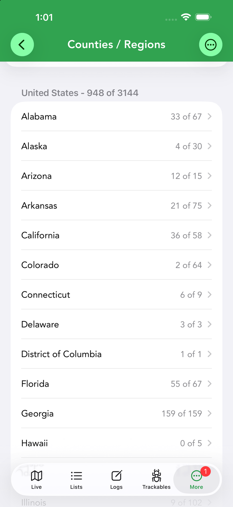
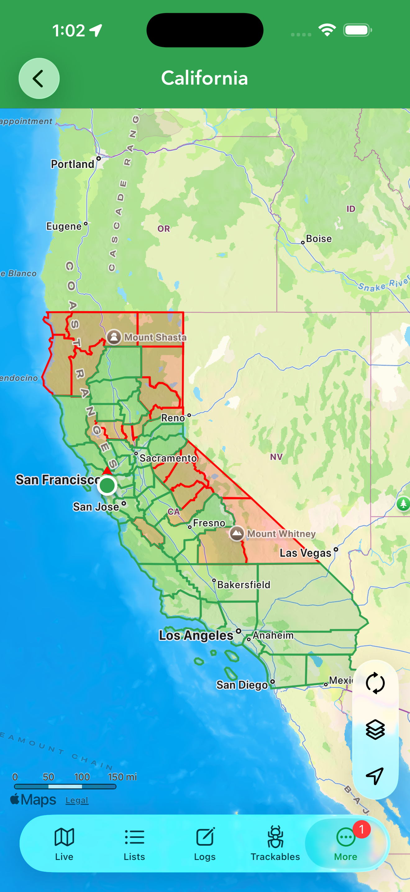
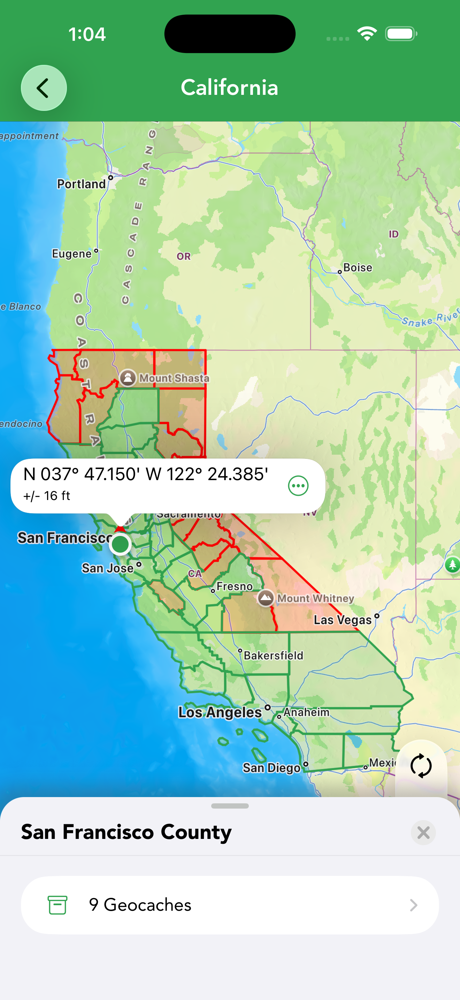
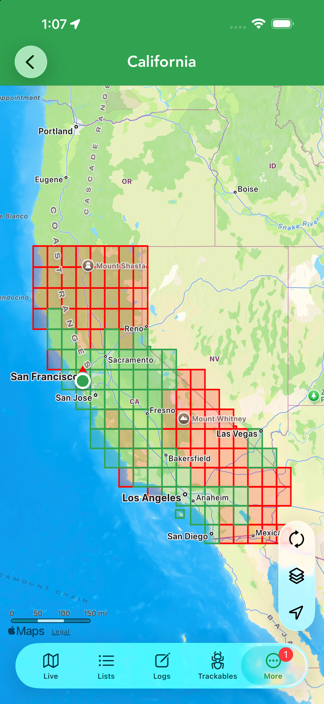

Challenge Tools
Chasing challenge caches? Cachly tracks your progress county by county and DeLorme page by page — with maps that show exactly where you still need a find.




Counties / Regions PRO
For county-challenge cachers, Counties / Regions tracks your finds at the county level. The screen starts empty until you Import Data; choose a source: Offline List, Dropbox, Google Drive, Files/iCloud or Other. Once imported you get a country-level progress header (say, 948 of 3144) above a row per state or region, each showing how many of its counties you’ve found. Open a state for its county list — each county with your find count — or tap View All to see the state as a map: found counties shaded green, missing ones red. Tap a green county to open its panel and view the geocaches you found there, right on the map. The … menu lets you Import Data again or Delete Current Data, and you can filter any offline list by County (see the filter table).
DeLorme Grid PRO
The DeLorme Grid tracks your finds by DeLorme atlas grid page, for grid-challenge caching. It works just like Counties / Regions: import caches first (same source choices), then browse per-state atlas pages with find counts, or View All to see the page grid drawn over the state map — green pages found, red still needed. Tapping a green page shows the geocaches you’ve found on it.